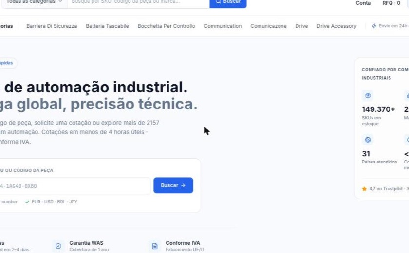
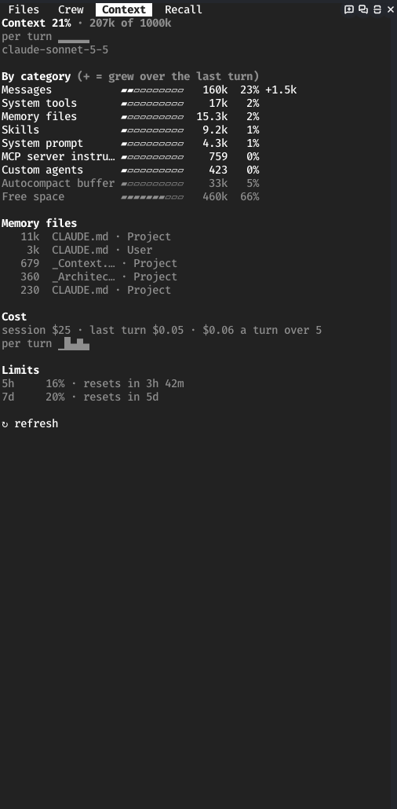

Engenheiro de IA e desenvolvedor full stack · Belo Horizonte, MG
Projeto agentes de IA e a base de software que os sustenta, e os coloco em produção: tool calling, RAG, guardrails em código e telemetria, sobre TypeScript, Python, PostgreSQL e AWS. Atuo na Cogna e na minha consultoria, a RM Digital Solutions.
Cliente na Itália, e-commerce B2B de automação industrial · 2025 até hoje
Motor de agentes e flows configuráveis sobre AWS Bedrock (Claude). Os prompts ficam no banco e se editam sem deploy; as chamadas de ferramenta passam pela Converse API e as respostas chegam por streaming SSE. O sistema enriquece, traduz e categoriza produtos cruzando fontes reais, como DigiKey e SerpApi.
Os guardrails estão no código, não no prompt: revisão humana campo a campo, categoria restrita à taxonomia existente, casamento de peça por MPN normalizado e a regra de usar foto real primeiro. Num lote de 33 mil nomes traduzidos por agentes em paralelo (77 lotes), detectei alucinação de IDs e passei a validar cada resposta pela posição da linha. Há também validação diária de disponibilidade dos modelos e telemetria de tokens e latência por chamada.
Guardrails em códigotaxonomia, MPN, foto real primeiro
Revisão humanacampo a campo
Catálogopublicado na loja

A loja em produção, onde o catálogo enriquecido é publicado.
Time de agentes de investimentos
Projeto próprio · paper trading na B3, sem dinheiro real
Três agentes com papéis separados no OpenMausBot, plataforma open source de agentes. O Ticker coleta dados separando fato de opinião, sempre com fonte e data. O Vega decide entradas e saídas simuladas e registra ticker, preço, tese, stop e fonte. O Ledger guarda o histórico, devolve contexto ao Vega antes de cada decisão e mede o desempenho: taxa de acerto, retorno contra CDI e Ibovespa, drawdown. Sem dado, ele reporta «não verificado» em vez de inventar.
O time hoje tem especialistas (gráfico, fundamentalista, sentimento, otimista e pessimista) e um ciclo de aprendizado: playbooks, lições e um placar que realimentam os agentes. Por trás, um servidor MCP próprio com 23 ferramentas e 6 rotinas agendadas rodando Claude Code em modo headless. Um experimento de cinco dias úteis expôs 9 falhas de orquestração; corrigi as críticas (idempotência de trades, vetos dentro da ferramenta, allowlist de tools) e cobri o sistema com 84 testes.
Stack: Python, FastAPI, MCP, PostgreSQL, Redis, Claude
Plugins para Claude Code
Open source
critique foi aprovado no marketplace da comunidade da Anthropic: usa hooks de ciclo de vida da sessão, funciona em quatro idiomas, não tem dependências externas e tem 208 testes com CI em Linux, macOS e Windows. cc-token-statusline mostra tokens, contexto e cota lendo o transcript de forma incremental, em Python só com a biblioteca padrão. claude-mods reúne outros plugins (crew, meter, notify, filetree) com releases versionadas, CI, branch protegida e política de segurança.

meter: contexto por categoria, custo e limites da sessão.
Cogna
Engenheiro de IA, via RM Digital · out/2026 até hoje
Observabilidade de fluxos de IA e de APIs com Datadog, a partir de logs e métricas das respostas. Desenvolvimento nos produtos Emprega.ai, GPS e Genoma, em Next.js, NestJS e Python/FastAPI com PostgreSQL.
Sistemas em produção
CRM white label multi-tenant
No ar desde ago/2026
Defini a arquitetura e entreguei backend, frontend e infraestrutura de um CRM que cada cliente vende como marca própria. O isolamento de tenant tem duas camadas: tenant_id na aplicação e RLS no PostgreSQL. Filas com Redis e BullMQ, auditoria por trigger, integrações com ERP, telefonia e WhatsApp, decisões registradas em ADRs e features novas atrás de flag.
Na borda, Kong com certificados ACME; a infraestrutura roda como código, com firewall endurecido e deploy por workflow manual. Trocar a região de hospedagem baixou a latência de 152 ms para 26 ms.
Stack: NestJS 11, PostgreSQL com RLS, BullMQ, Redis, Kong
BordaKong, certificados ACME
Camada 1: aplicaçãotenant_id em toda consulta
Camada 2: bancoRLS no PostgreSQL
Auditoriapor trigger
World Automation Store, a loja
2025 até hoje
Reconstruí do zero a loja que rodava em WordPress e WooCommerce: frontend em Next.js 15 no Cloudflare Pages, API em NestJS com Drizzle e PostgreSQL, infraestrutura AWS em Terraform (ECS Fargate, RDS, CloudFront, S3, SES). O catálogo tem 150 mil SKUs, e o SEO foi preservado com redirecionamentos 301/410 e sitemap segmentado.
Be Planned
Setor de mineração
SaaS de simulação Monte Carlo para provisionar custos de fechamento de mina. O motor roda 10 mil iterações por simulação, entrega faixas P10 e P90 e corrige valores por IPCA. O portal do cliente gera relatório em PDF e tem 2FA por TOTP e fluxos de LGPD.
Formato do resultado: a faixa entre P10 e P90 e a mediana ao longo do tempo. Ilustração com dados fictícios, não é de um cliente real.
Reescrevi o backend de Fastify e Prisma para NestJS e Drizzle. O Postgres usa RLS com roles sem BYPASSRLS, as filas rodam em pg-boss e o upload de vídeo passa por um proxy TUS em streaming.
Plataforma de vendas em lives
Para uma rede de lojas · multi-tenant
O comentário no Instagram ou no TikTok vira reserva, com fila, sacolinha e bipagem entre unidades. Já opera com pedidos reais, com CSP bloqueante, 41 testes e CI.
Outros sistemas
Senhas e filas para saúdeWhite label com totem, painel de TV e operador, domínio próprio por cliente, fila concorrente com SKIP LOCKED e assinatura recorrente via Asaas. Na Unimed Pouso Alegre (MG), com avaliação em tablet e Supabase Realtime.
E-commerces de varejoVendas reais com cartão, boleto e Pix (MaxiPago, Asaas), frete pelo Melhor Envio, MFA obrigatório para a equipe, CSP e LGPD.
CondeNexoControle de acesso para condomínios, com trilha de auditoria em hash chain e fluxos de LGPD.código da APIcódigo do frontend
CRM BeTechCRM de prospecção com mapa, gestão de leads e WhatsApp.ver aplicação
RM ScheduleAgendamentos com assinatura recorrente.ver aplicação
ZapflowProduto próprio, hoje pausado: SaaS multi-tenant de WhatsApp com dois provedores (Meta Cloud API e Baileys), webhooks assinados com HMAC, segredos em AES-256-GCM e cobrança pelo Mercado Pago.
Trajetória
Consultoria PJ · RM Digital Solutions, desde jun/2021
Cogna · Engenheiro de IA
Observabilidade de fluxos de IA com Datadog e desenvolvimento em Emprega.ai, GPS e Genoma.
Petz · Engenheiro de Software Frontend Sênior
Integração de um plano de saúde aos fluxos de agendamento e histórico. Propus mudanças de contrato de BFF que as squads de frontend e backend adotaram.
ProAK · EUA, SaaS de criptoativos
Full stack sênior. Reduzi em 60% o tempo de resposta de consultas e pipelines de dados e desenhei APIs com stakeholders americanos, em inglês.
Atlas Finance e Vênus Checkout · EUA
Na Atlas, arquitetura de microsserviços, Scrum e CI/CD. Na Vênus, arquitetura AWS com Cloudflare e cerca de 30% menos custo de cloud.
Empregos CLT, em paralelo à consultoria
Itaú Unibanco · Analista de Engenharia de TI
Produto interno da vertical de seguros, do zero à v1 em produção (React, Python, Java). Novas camadas de API REST na modernização de legados, com 35% menos tempo médio de resposta.
Grupo Boticário · Developer II
Um de dois engenheiros frontend da plataforma de logística. Migração de monolito para microsserviços, com 40% menos tempo de deploy.
Loft · Software Engineer Front End
Módulo de listagem de imóveis, com 13 mil imóveis e 30 mil corretores. Performance, page speed e componentes React testados.
Antes, 2015 a 2021
dti digital, Getrak e Axxiom · frontend e full stack
React, Vue/Nuxt e React Native. Na Axxiom, fui por quatro anos o dono do GDIS, sistema da Cemig em Vue.js com mais de 200 usuários internos.
Competências
IA
AWS Bedrock (Claude), tool calling, streaming SSE, agentes e multiagente, guardrails e human-in-the-loop, RAG e memória de agente, avaliação de agentes, observabilidade de LLM com Datadog, MCP (servidor e cliente), plugins, hooks e skills do Claude Code
Pós em Engenharia de Software em IA Aplicada (UNIPDS, em andamento) · Pós em Engenharia de Software (Descomplica, 2023) · Bacharel em Ciência da Computação (UniBH, 2021)